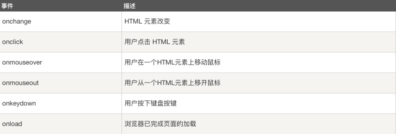

HTML 事件是发生在 HTML 元素上的事情。 当在 HTML 页面中使用 JavaScript 时， JavaScript 可以触发这些事件。
HTML 事件可以是浏览器行为，也可以是用户行为。 以下是 HTML 事件的实例： HTML 页面完成加载 HTML input 字段改变时 HTML 按钮被点击 通常，当事件发生时，你可以做些事情。 在事件触发时 JavaScript 可以执行一些代码。 HTML 元素中可以添加事件属性，使用 JavaScript 代码来添加 HTML 元素。
单引号: <some-HTML-element some-event='JavaScript 代码'> 双引号: <some-HTML-element some-event="JavaScript 代码"> 双引号: 在以下实例中，按钮元素中添加了 onclick 属性 (并加上代码):
现在时间是
下面是一些常见的HTML事件的列表:
更多事件列表: JavaScript 参考手册 - HTML DOM 事件。
事件可以用于处理表单验证，用户输入，用户行为及浏览器动作: 页面加载时触发事件 页面关闭时触发事件 用户点击按钮执行动作 验证用户输入内容的合法性 等等 ... 可以使用多种方法来执行 JavaScript 事件代码： HTML 事件属性可以直接执行 JavaScript 代码 HTML 事件属性可以调用 JavaScript 函数 你可以为 HTML 元素指定自己的事件处理程序 你可以阻止事件的发生。 等等 ...